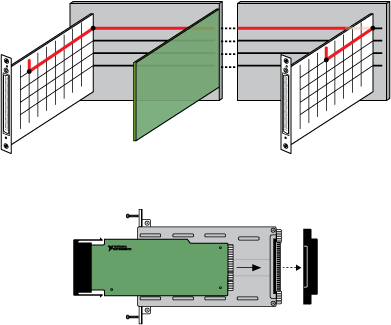

所有 NI SwitchBlock 系统至少包含两个组件：一个 NI SwitchBlock 载体和一个或多个 NI SwitchBlock 中继卡。每个继电器卡都包含一个由行和列组成的开关矩阵。如果一个 NI SwitchBlock 载体中有多个继电器卡，则可以使用模拟总线对单个矩阵进行列扩展以创建大型矩阵。
NI SwitchBlock 载体的背板包括 16 条模拟总线线路，可用于在继电器卡之间路由信号。模拟总线继电器位于继电器卡的行和它们各自的模拟总线线路之间，位于 NI SwitchBlock 载体的背板上。下图显示了一个带有两个继电器卡的 NI SwitchBlock 载体，这些继电器卡已组合成一个 NI SwitchBlock 设备。
NI SwitchBlock 载体的左右两侧有模拟总线扩展连接器，可与 NI 2806 扩展桥连接，以实现 PXI 机箱中多个 NI SwitchBlock 载体之间的模拟总线共享。多个 NI 2806 扩展桥接器可用于将模拟总线扩展到多达四个 NI SwitchBlock 载体，在单个 18 插槽 NI PXI 机箱中，总共 24 个 NI SwitchBlock 中继卡。下图显示了两个带有 NI 2806 扩展桥的 NI SwitchBlock 载体。您可以使用 NI 2806 扩展桥在 NI SwitchBlock 载体之间路由信号，如第一张图所示。在插入扩展桥之前，您必须从 NI PXI-2800 载体上取下模拟总线盖板，如第二张图所示。

 提交有关此主题的反馈。
提交有关此主题的反馈。 访问ni.com/support以获得技术支持。
访问ni.com/support以获得技术支持。